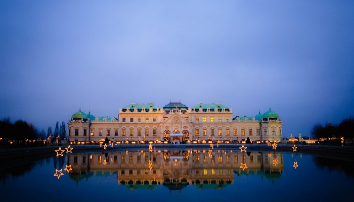

Vienna is the national capital, largest city, and one of nine states of Austria. Vienna is Austria's most populous city, with about 2 million inhabitants (2.6 million within the metropolitan area, nearly one third of the country's population), and its cultural, economic, and political centre. It is the 6th-largest city by population within city limits in the European Union.
Until the beginning of the 20th century, Vienna was the largest German-speaking city in the world, and before the splitting of the Austro-Hungarian Empire in World War I, the city had 2 million inhabitants. Today, it is the second-largest German-speaking city after Berlin. Vienna is host to many major international organizations, including the United Nations, OPEC and the OSCE. The city is located in the eastern part of Austria and is close to the borders of the Czech Republic, Slovakia and Hungary. These regions work together in a European Centrope border region. Along with nearby Bratislava, Vienna forms a metropolitan region with 3 million inhabitants. In 2001, the city center was designated a UNESCO World Heritage Site. In July 2017 it was moved to the list of World Heritage in Danger. Additionally, Vienna is known as the "City of Music" due to its musical legacy, as many famous classical musicians such as Beethoven and Mozart called Vienna home. Vienna is also said to be the "City of Dreams", because of it being home to the world's first psychoanalyst Sigmund Freud. Vienna's ancestral roots lie in early Celtic and Roman settlements that transformed into a Medieval and Baroque city. It is well known for having played a pivotal role as a leading European music center, from the age of Viennese Classicism through the early part of the 20th century. The historic center of Vienna is rich in architectural ensembles, including Baroque palaces and gardens, and the late-19th-century Ringstraße lined with grand buildings, monuments and parks.
